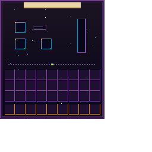

Enchant Transfer
Extract, transfer, and combine enchantments through Magic Cards — now with colored cards, attachable modules, and an XP conversion system.
Requires: Fabric Loader and Fabric API · Minecraft 1.21.11
CurseForge · GitHub · Issues
Enchant Transfer adds a craftable block — the Transfer Table — that lets you extract enchantments from any item into individual Magic Cards, apply those cards to other compatible items, and combine two cards of the same enchantment and level to upgrade them. All operations are free (no XP cost), and vanilla enchantment compatibility rules are respected.
Version 2.0 introduces the Module System: specialized blocks that attach to the Transfer Table on any face, extending its capabilities. The first module — the Infusion Coil — converts Magic Cards into stored XP and fills glass bottles into Bottles o' Enchanting.
Core Features
Extract
Remove enchantments from any enchanted item or book. Each enchantment becomes its own Magic Card, color-coded by category.
Apply
Place a Magic Card and a target item in the Transfer Table. The enchantment transfers instantly, respecting vanilla incompatibility rules.
Combine
Two cards of the same enchantment and level produce one card of the next level, up to vanilla maximum. Stacks work too — 5 + 6 cards yields 5 upgraded and 1 remainder.
Zero cost
All Transfer Table operations — extraction, application, and combination — are completely free. No XP, no materials consumed.
Typed Magic Cards New
Magic Cards are now color-coded by enchantment category. When you extract an enchantment, the Transfer Table automatically produces a card of the matching color.
 Protection
Protection
 Nature
Nature
 Combat
Combat
 Utility
Utility
 Arcane
Arcane
 Curse
Curse
| Card | Category | Enchantments |
|---|---|---|
| Blue |
Protection | Protection, Fire Protection, Blast Protection, Projectile Protection, Feather Falling |
| Green |
Nature | Respiration, Aqua Affinity, Depth Strider, Silk Touch, Fortune |
| Red |
Combat | Sharpness, Smite, Bane of Arthropods, Impaling, Fire Aspect, Looting, Thorns, Sweeping Edge |
| Yellow |
Utility | Efficiency, Unbreaking, Mending, Swift Sneak, Infinity, Power, Punch |
| Purple |
Arcane | Channeling, Riptide, Loyalty, Frost Walker |
| Black |
Curse | Curse of Vanishing, Curse of Binding |
Module System New
The Transfer Table now works as a hub. Specialized module blocks can be placed on any of its 6 faces. Right-click the Transfer Table to open the Selector Screen — a visual hub showing all connected modules with their real-time status.
- Up to 6 modules per Transfer Table (one per face)
- Each module type adds different functionality
- Navigate between the hub and any module using the dot navigation bar
- Modules show live status in the Selector — processing progress, tank levels, and connection state
GUI Screens
 Selector
Selector
 Transfer Table
Transfer Table

Infusion CoilStatic GUI backgrounds — dynamic elements (wires, tank fills, module icons, progress) are drawn by code at runtime.
Infusion Coil New
The first module for the Transfer Table. A vertical flask made of copper, brass, and glass that converts Magic Cards into XP.
How it works
- Insert a Magic Card into the card slot — the coil processes it over ~10 seconds
- XP is stored in an internal tank (1,000 XP capacity)
- Place glass bottles in the bottle slot to extract XP as Bottles o' Enchanting (7 XP per bottle)
- Unenchanted cards yield a minimum of 5 XP; enchanted cards yield more based on their enchantment
Tip
The Infusion Coil stays vertical regardless of which face it's attached to. The copper connector stub always points toward the Transfer Table.
→ Infusion Coil × 1
Transfer Table
→ Transfer Table × 1 · Requires an iron pickaxe or better to mine.
The 3D model reflects its recipe — gold on the outer edge, redstone in the middle ring, carbon-black inner layer, and a blue diamond core that glows from every angle.
Compatibility with 1.0.x worlds
Worlds created with Enchant Transfer 1.0.x are fully compatible. Existing Transfer Tables keep working — the block ID hasn't changed.
Old Magic Cards stored in chests retain their enchantment data. They will appear as the generic (blank) card variant; their functionality is unchanged. New cards extracted after updating will automatically use the color-coded system.
Changelog — 2.0.0
- Module System — The Transfer Table is now a modular hub that accepts specialized blocks on any of its 6 faces
- Infusion Coil — First module: converts Magic Cards into XP, fills glass bottles into Bottles o' Enchanting
- Typed Magic Cards — 6 color-coded card variants by enchantment category (Protection, Nature, Combat, Utility, Arcane, Curse)
- Selector Screen — New hub GUI with live module status, wires, and processing indicators
- Redesigned GUIs — Dark starry aesthetic, golden/cyan accents, navigation dot bar, ghost input hints
- New 3D models — Custom Transfer Table model with stepped funnel and emissive diamond core; Infusion Coil flask with copper/brass/glass and fluid renderer
- Block Entity Renderers — Pulsing blue core for the Transfer Table; fluid fill animation, cap glow, and directional connector for the Infusion Coil